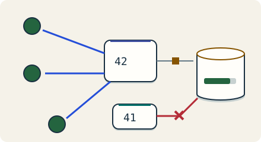

Go deeper · 7 minutes
Agreeing on one leader
A leader needs a safe election and a way to stop old owners from acting.
Open this lesson
Two schedulers both think they own the job
A scheduler pauses for twenty seconds. Its lease expires, so another scheduler takes over. The first wakes and sends an invoice anyway. A lease can tell the service who should own a job. It cannot stop a paused process from using an old decision. Choosing one leader and enforcing that choice are separate parts of the design.
Raft in plain words
Stop the leader and run an election. A term needs a majority of the fixed voter set. Try writes on a partition before and after electing its majority.
Worked example: a five-node split
An election needs a majority of the configured voters, even after failures. A new leader must also satisfy log-freshness and commit rules. Old processes can remain alive after losing authority. A fencing token works only when the target of the side effect checks it; merely attaching a larger number to a request changes nothing.
Five voters split into two groups
- A + B: 2 votes: Cannot elect or commit without a majority.
- C + D + E: 3 votes: Can elect a leader with a sufficiently current log.
- Fence side effects: The storage target rejects an older ownership token.
Make stale ownership harmless
An election does not by itself stop an old process from writing to external storage. Advance the term and compare the old token with the storage fence.
Key numbers
- Five voters
- ≈ 3 replies. floor(5/2) + 1; tolerates two unavailable voters
- Three voters
- ≈ 2 replies. Tolerates one unavailable voter; often enough
- Fencing boundary
- 42 rejects 41. Durably compare tokens where the side effect is accepted
Check your reasoning
Think through these questions before opening the lesson. In the game you can test the idea and compare your reasoning.
- Five fixed Raft voters split into groups of three and two. What can the two-node side promise without contacting the other side?
- We have a majority election. How could we still send an invoice twice? Follow-up: the provider does not accept fencing tokens.
- A worker checks its lease, then pauses. A new owner writes before it resumes. What rejects the delayed old write?
- Should every request consult the coordination service? Follow-up: its quorum is down for ten minutes.
- SQL already enforces exclusive invoice ownership. Which requirement could justify an additional coordination service?
The key point
Consensus preserves one committed order; fencing carries that authority to the resource.
Practise this idea
- Medium
Rate limiter for a public API
Developers call your public API from scripts and apps. A few misbehaving or malicious clients can crowd out everyone else. Build limits that are fair, fast and cheap, and that survive a retry storm.
- Hard
Scheduled job service
Customers register jobs: "call my web address every night at 02:00" or "every hour on the hour". Aim to fire within 5 seconds; work still waiting after 60 seconds counts as failed. Retry safely after a crash. One external effect requires the customer endpoint to honor a stable job occurrence key. Half the world picks the top of the hour, so a huge crowd of jobs comes due in the same second.
- Hard
Concert ticket drop
Tickets for a huge tour go on sale at 10:00 sharp. Hundreds of thousands of fans arrive in the same minute, bots arrive earlier, and everyone refreshes when the page stalls. There are 40,000 seats. Sell each one once, charge each buyer once, and keep the site standing.
- Hard
Collaborative documents
Many people edit the same document at the same moment and everyone must see a consistent result in a fraction of a second. Edits must never be lost, even if a server crashes in the middle of typing or two people type in the same place.